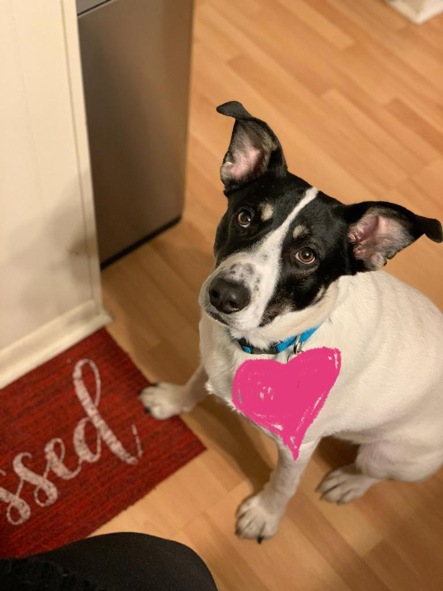
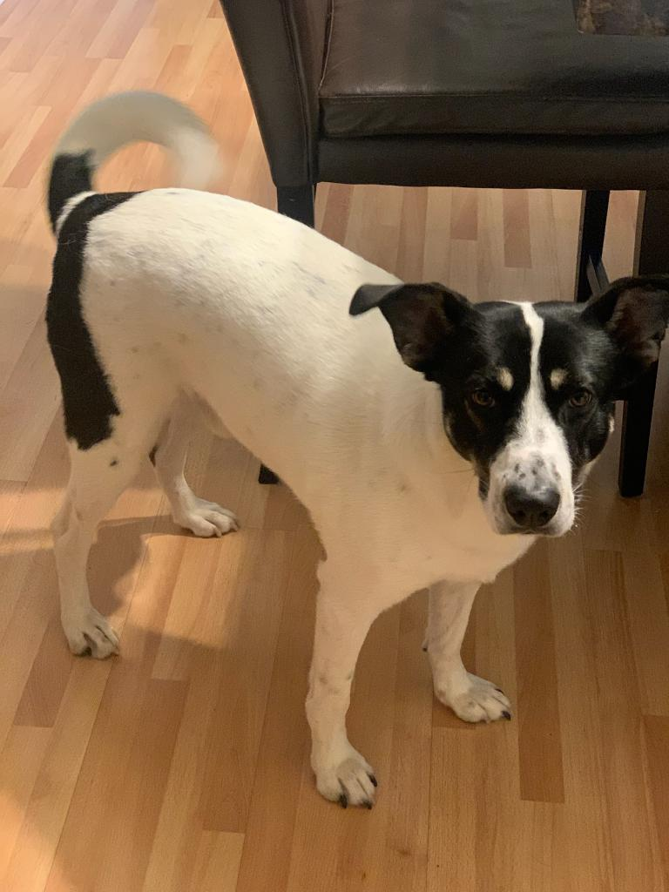
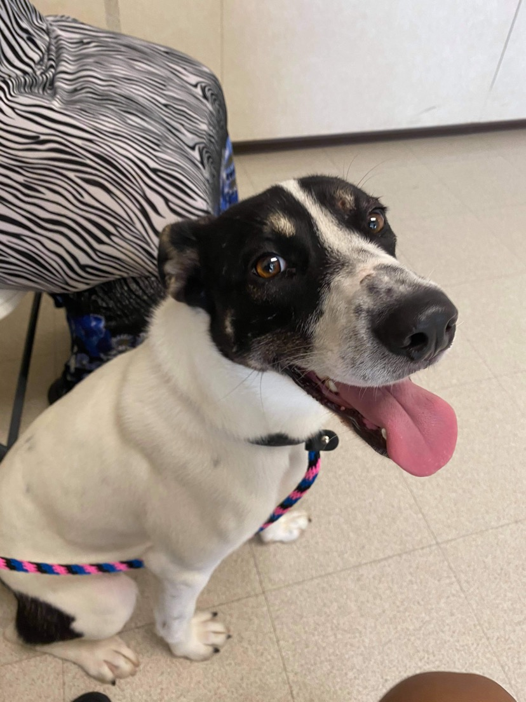
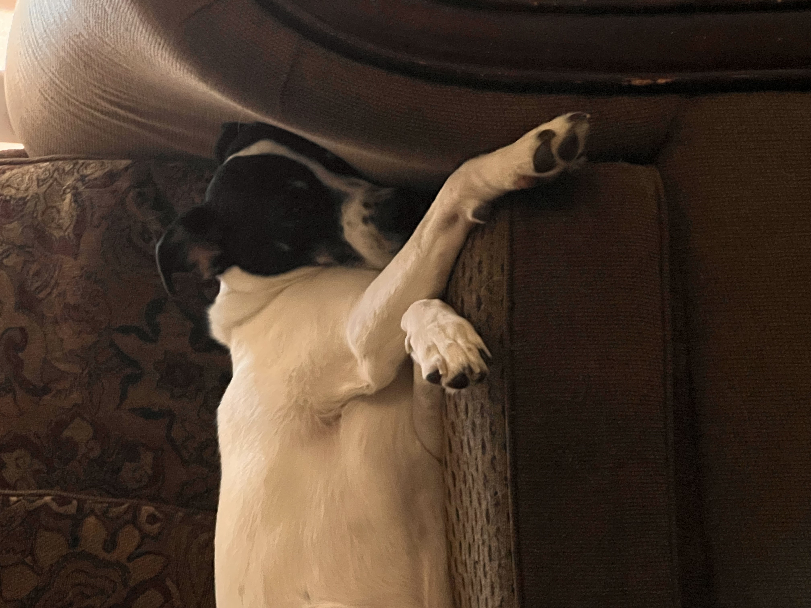
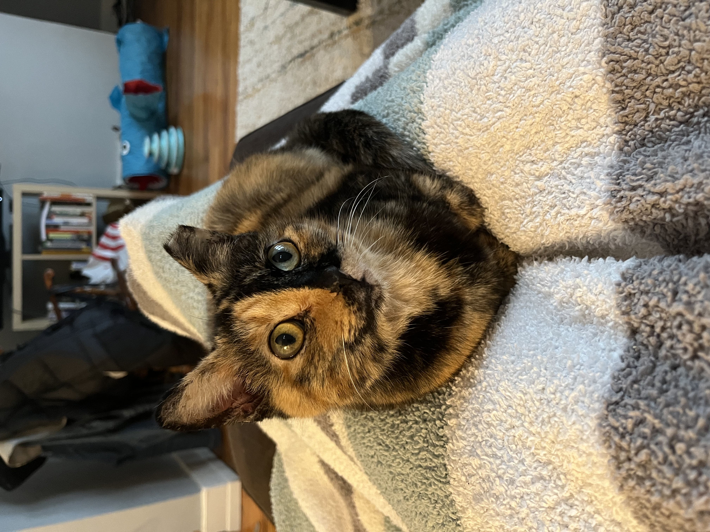
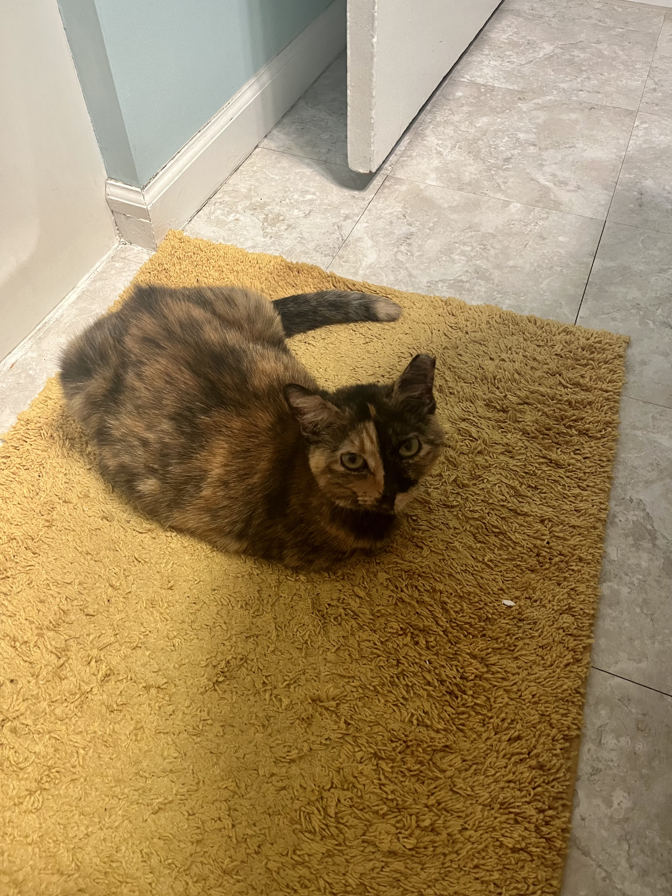

Pets ♥
Axel Foley
Axel is a 5 year old mixed breed. His mom is a German Shepherd!
Photo Gallery
  Likes
- Chicken
- Chasing squirrels
- Playing in the snow
Bacon Q Dog

Bacon Q. Dog is a 9yr old labradoodle. He prefers to spend his days lounging among the three different beds/couches that his family has gifted him. He enjoys a walk or two around the neighborhood, as long as he can pretend that he doesn't see any of the other animals to avoid the embarrassment of not wanting to admit he has no wolf-like skills in chasing them.
At night just as the rest of the family is ready to relax, Bacon suddenly wants to release all of his energy. He will place his toys on a mini couch and frantically drag the couch around, giving his toys "a ride." There is also a lot of rolling. Lots and lots of rolling.
Photo Gallery


Likes
- Belly rubs
- Playing tug-of-war
- Sneaking onto the couch
Fitz

Fitz is an adorable Boston Terrier.
Photo Gallery


Likes
- Blankets
- Being warm
- Barking
Maple

Maple is a 2 year old tabby cat with brown stripes. She is very playful and friendly but also loves lounging in the sun!
Maple is a huge fan of treats - she has even learned how to open doors to steal some extra treats.
Photo Gallery


Likes
- Biting his human
- Chicken breast
- His catnip pillow
Pumpkin Pie

Pumpkin Pie is a "broadly western" cat who met her owner as a foster cat.
Her owner fell in love with her and had no choice but to adopt her!
Pumpkin loves going on walks on her harness and cuddles.
Photo Gallery
 
Likes
- Paper bags
- Reaching the top of her tower
- Comforting her owner
Smoothie

Smoothie has been dubbed the "world's most photogenic cat", and her emerald eyes and golden fur have even inspired a mural in New Zealand. Smoothie also has an aptly-named brother named Milkshake, and the two are often featured together across social media platforms.
Photo Gallery


Likes
- Playing
- Sunshine